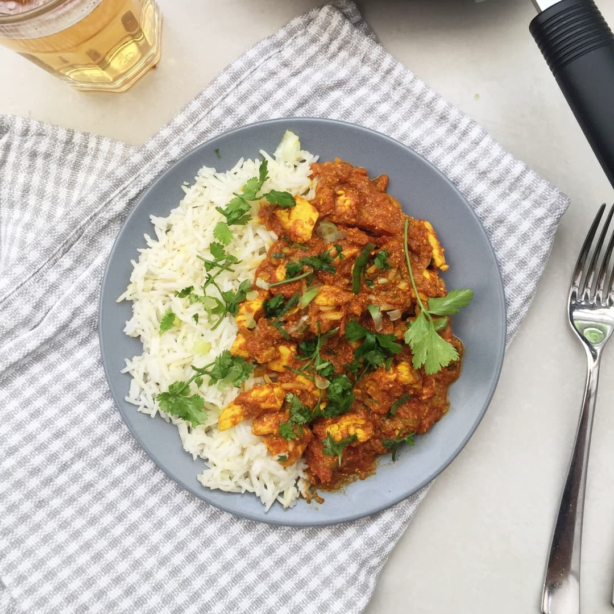

Spicy Chicken Curry

Description
A flavorful dish made with tender chicken simmered in a rich, aromatic blend of spices, tomatoes, and coconut milk. It's a hearty, warming meal that's perfect when paired with rice or naan for a satisfying dinner
Ingredients
- 1 tbsp oil
- 1 spring onion
- 1 clove garlic
- 1 tbsp curry powder
- 1 tbsp ground ginger
- 200ml chopped tomatoes
- Chicken thigh or breast
- 60g rice
- 200ml water
- 1 tbsp yogurt
- Fresh coriander
Steps
- Start by heating some oil in a pan and add the chopped spring onions and garlic. Let it cook for 5 minutes then throw in the curry powder and ground ginger. Pour the chopped tomatoes into the pan and mix everything up before adding the chicken. Let it cook for about 5 minutes or until it looks cooked on all sides.
- Add a splash of water and a scoop of yogurt, before stirring it together and letting it simmer for another 5 - 10 minutes.
- While the curry is simmering, find another pan and cook the rice following the instructions on the packet.
- Once everything is cooked, grab a plate and dig in!